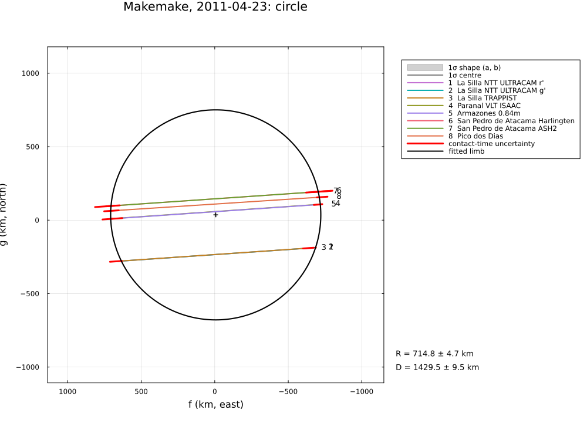
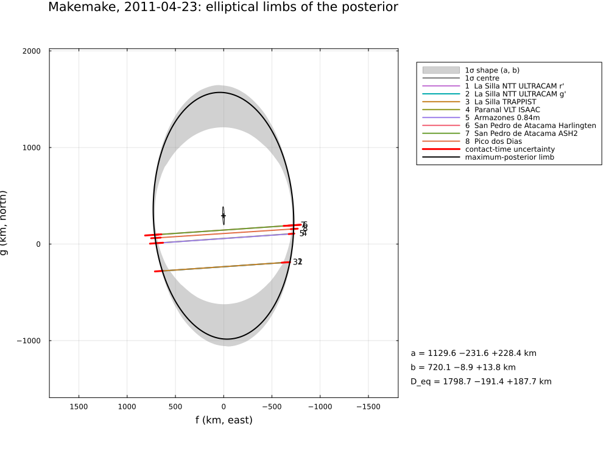

Makemake, 2011 April 23
The stellar occultation by the dwarf planet (136472) Makemake on 2011 April 23, reduced from the published timings of Ortiz et al. (2012), Nature 491, 566, "Albedo and atmospheric constraints of dwarf planet Makemake from a stellar occultation": eight chords from five sites in Chile and Brazil, among them the GPS-timed ULTRACAM light curves of the NTT.
The example covers:
- the star: the paper names it (NOMAD 1181-0235723), its Supplementary Information gives a position from ground-based astrometry; it is identified in Gaia DR3;
- the circular fit (the paper: 1430 ± 9 km);
- the elliptical fit: all chords cross the central part of the body, so the long axis is poorly constrained; the posterior shows how poorly (the paper: axial ratio 1.15 ± 0.17, long axis 9 ± 24° from north, preferred axes 1430 × 1502 km);
- the astrometry.
The data are transcribed in examples/data/makemake_20110423.jl, with the stored JPL Horizons ephemeris, so the script runs offline:
julia --project=. examples/makemake_2011.jl [output_dir] (default: examples/output/makemake_2011)The code is not run when the manual is built. The output after each section is that of the last run of examples/makemake_2011.jl, stored in examples/output/makemake_2011/output.txt.
using Occultations, Random, Printf, Statistics
using Plots
import CairoMakie # saves the GeoMakie maps (Makie figures)
include(joinpath(@__DIR__, "standard_figures.jl"))
include(joinpath(@__DIR__, "data", "makemake_20110423.jl"))
out = length(ARGS) >= 1 ? ARGS[1] : mkpath(joinpath(@__DIR__, "output", "makemake_2011"))
rng = MersenneTwister(2011)
P = MAKEMAKE_PAPER
q(x) = quantile(x, [0.15865525393145707, 0.5, 0.8413447460685429])
pm(x) = (v = q(x); @sprintf("%.3g −%.2g +%.2g", v[2], v[2] - v[1], v[3] - v[2]))Event and geometry (paper values in parentheses)
ev = makemake_event()
D = ev.ca.dist_km
@printf("%d chords; distance %.2f au (%.1f), shadow velocity %.2f km/s (%.2f), Fresnel scale %.2f km at 0.6 µm\n",
length(ev.chords), D / 1.495978707e8, P.distance_au, ev.ca.vel, P.velocity, fresnel_scale(0.6, D))
ra, dec, _ = Occultations.barycentric(ev.star, ev.tref)
@printf("star position of the Supplementary Information − Gaia DR3 at the event: Δα cos δ = %+.0f mas, Δδ = %+.0f mas\n",
(parse_ra(P.star_si[1]) - ra) * cosd(dec) * 3.6e6, (parse_dec(P.star_si[2]) - dec) * 3.6e6)
println("(dispersion of the SI astrometry: 130 mas in RA, 60 mas in Dec)")8 chords; distance 51.50 au (51.5), shadow velocity 22.09 km/s (22.12), Fresnel scale 1.52 km at 0.6 µm
star position of the Supplementary Information − Gaia DR3 at the event: Δα cos δ = +97 mas, Δδ = -5 mas
(dispersion of the SI astrometry: 130 mas in RA, 60 mas in Dec)Circular limb
rc = fit_limb(ev; model=CircleLimb(), rng=rng)
@printf("diameter %.1f ± %.1f km (%.0f ± %.0f), χ²/dof = %.3f (%.3f)\n", 2rc[:radius][1], 2rc[:radius][2], P.circle_D...,
reduced_chi2(rc), P.circle_chi2_pdf)diameter 1429.5 ± 9.5 km (1430 ± 9), χ²/dof = 0.629 (1.032)Elliptical limb
re = fit_limb(ev; rng=rng)
@printf("best fit: a′ = %.0f ± %.0f km, b′ = %.1f ± %.1f km, PA of the minor axis %.0f ± %.0f°, χ²/dof = %.3f (%.3f)\n",
re[:equatorial_radius]..., re[:semi_minor_axis]..., mod(re[:position_angle][1], 180), re[:position_angle][2],
reduced_chi2(re), P.ellipse_chi2_pdf)The chords sample only the central part of Makemake: the ellipse's long axis is hardly constrained. The posterior (flat priors) shows the range; the oblateness is bounded at 0.5 here (an axial ratio of 2), far beyond what a body of this size can have. The minor axis is well determined; the axial ratio is set mostly by the prior and the bound – the paper's 1.15 ± 0.17 (from one-dimensional χ² cuts) is not a constraint of the chords. The Supplementary Information (Sect. 8) comes to the same conclusion: with no negative chords away from the positive ones, the elongation perpendicular to the chords is "mainly a result of limitations in the observations"; the authors prefer the nearly circular solution.
prob = LimbProblem(ev; bounds=Dict(:oblateness => (-0.5, 0.5)))
re2 = fit(prob; rng=rng)
post = sample(re2; nsteps=6000, rng=rng)
S = samples(post)
col(n) = S[:, findfirst(==(n), post.names)]
ε = col(:oblateness)
ratio = 1 ./ (1 .- abs.(ε))
d = derived_samples(post; n=6000, rng=rng)
@printf("posterior: minor axis %s km (%.0f ± %.0f), axial ratio %s (%.2f ± %.2f), area-equivalent diameter %s km\n",
pm(2 .* d.semi_minor_axis), P.ellipse_minor..., pm(ratio), P.axial_ratio..., pm(2 .* d.equivalent_radius))
@printf("P(axial ratio > 1.3) = %.2f; the chords exclude the strongly elongated shapes only weakly\n", mean(ratio .> 1.3))best fit: a′ = 1093 ± 1601 km, b′ = 718.6 ± 46.6 km, PA of the minor axis 92 ± 4°, χ²/dof = 0.639 (1.027)
posterior: minor axis 1.44e+03 −18 +26 km (1428 ± 17), axial ratio 1.56 −0.31 +0.3 (1.15 ± 0.17), area-equivalent diameter 1.81e+03 −1.9e+02 +1.8e+02 km
P(axial ratio > 1.3) = 0.80; the chords exclude the strongly elongated shapes only weaklyAstrometry
a = astrometry(rc)
@printf("RA %s Dec %s at %s UTC (σ %.2f, %.2f mas); offset from JPL Horizons Δα cos δ = %+.2f, Δδ = %+.2f mas\n",
a.ra_str, a.dec_str, isot(a.epoch; digits=1), a.ra_err, a.dec_err, a.offset_ra, a.offset_dec)RA 12 36 11.39376 Dec +28 11 10.3200 at 2011-04-23T01:34:43.1 UTC (σ 0.80, 0.73 mas); offset from JPL Horizons Δα cos δ = -0.18, Δδ = +0.96 masFigures
savefig(plot(rc; title="Makemake, 2011-04-23: circle", size=(1000, 750)), joinpath(out, "makemake_circle.png"))
savefig(plot(post; title="Makemake, 2011-04-23: elliptical limbs of the posterior", size=(1000, 750)),
joinpath(out, "makemake_ellipse_posterior.png"))
# the standard figures: limb fits (default, 68.3 % region, as the paper), maps (prediction, post-fit,
# comparison) and the globe
standard_figures("makemake", rc; out=out, projection="+proj=laea +lon_0=-60 +lat_0=-25", limits=(-80, -35, -40, -10),
window=600, marks=60)
println("figures written to ", out)The circular fit, and the elliptical limbs of the posterior:

